Automatic Transaxle Repair Procedures
Removal
1. Remove the following items;
A. Engine cover.
B. Air cleaner assembly and air duct.
C. Battery and battery tray.
2. Remove the ground line after removing the bolt (A).

3. Disconnect the solenoid valve connector (A) and inhibitor switch connector (B).
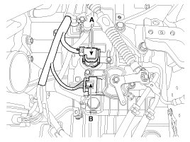
4. Remove the control cable (C) after removing the nut (A) and the bolt (B).
Tightening torque:
(A) 9.8 - 13.7 N.m (1.0 - 1.4 kgf.m, 7.2 - 10.1 lb-ft)
(B) 14.7 - 21.6 N.m(1.5 - 2.2 kgf.m, 10.9 - 15.9 lb-ft)
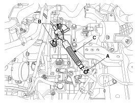
5. Disconnect the hose (B) after removing the automatic transaxle fluid cooler hose clamp (A).
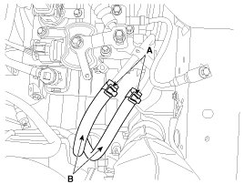
6. Remove the wiring clips (A).
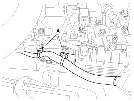
7. Remove the solenoid valve connector and inhibitor switch connector wiring mounting bracket (A).
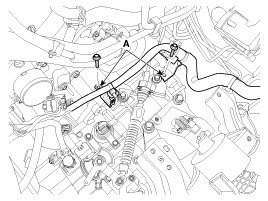
8. Using the engine support fixture (SST No.: 09200-38001), hold the engine and transaxle assembly safely.

9. Remove the automatic transaxle upper mounting bolt (A-2ea) and the starter motor mounting bolt (B-2ea).
Tightening torque:
(A,B) 42.2 - 54.0 N.m (4.3 - 5.5 kgf.m, 31.1 - 39.8 lb-ft)
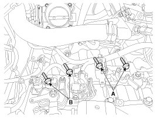
10. Remove the automatic transaxle mounting support bracket bolt (A).
Tightening torque:
88.3 - 107.9 N.m (9.0 - 11.0 kgf.m, 65.1 - 79.8 lb-ft)
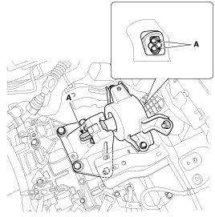
11. Lift the vehicle with a jack.
12. Remove the under cover (A).
Tightening torque:
6.9 - 10.8 N.m (0.7 - 1.1 kgf.m, 5.1 - 8.0 lb-ft)

13. Remove the roll stopper (C) after removing the bolt (A) and (B).
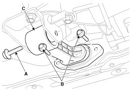
14. Remove the following items.
A. Drive shaft assembly.
15. Remove the dust cover (A).
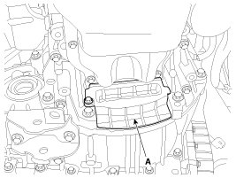
16. Remove the torque converter mounting bolt (A-4ea) with rotating the crankshaft.
Tightening torque:
45.1 - 52.0 N.m (4.6 - 5.3 kgf.m, 33.3 - 38.3 lb-ft)
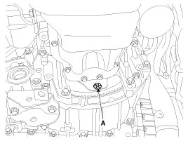
17. Remove the automatic transaxle with a jack after removing the mounting bolt (A-2ea, B-3ea).
Tightening torque:
(A) 42.2 - 53.9 N.m (4.3 - 5.5 kgf.m, 31.1 - 39.8 lb-ft)
(B) 39.2 - 46.1 N.m (4.0 - 4.7 kgf.m, 28.9 - 34.0 lb-ft)
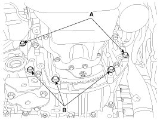
Installation
1. Installation is the reverse of removal.
CAUTION:
If the oil seal on the transaxle case side is damaged and fluid is leaking, replace the oil seal with a new unit. When installing the new oil seal, use the specialized tool (oil seal installer, 09452-26100).
NOTE:
After replacement or reinstallation procedure of the automatic transaxle assembly, must perform procedures below.
- Adding automatic transaxle fluid.
- After replacing the automatic transaxle, clear the Diagnostic Trouble Code(DTC) using the GDS tool. DTC cannot be cleared by disconnecting the battery.
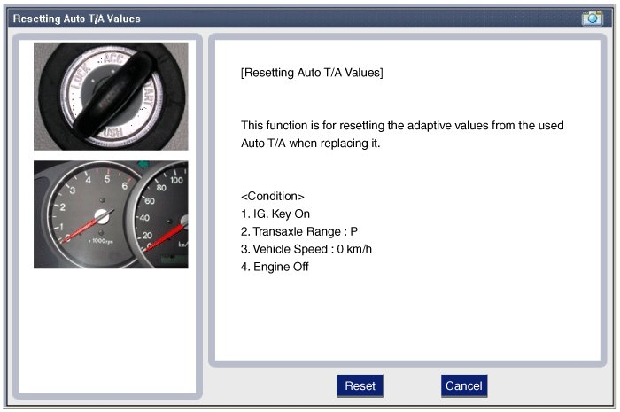
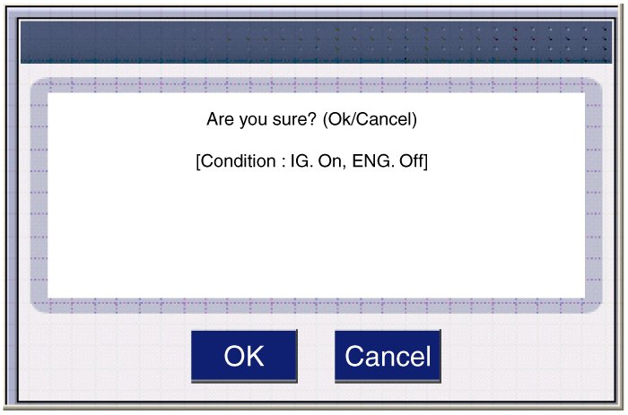
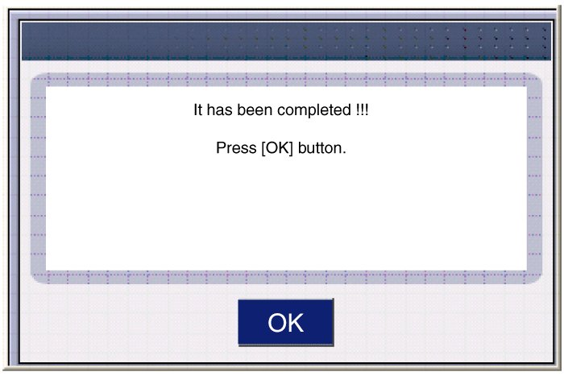
- Perform TCM learning after replacing the transaxle to prevent slow transaxle response, jerky acceleration and jerky startup.